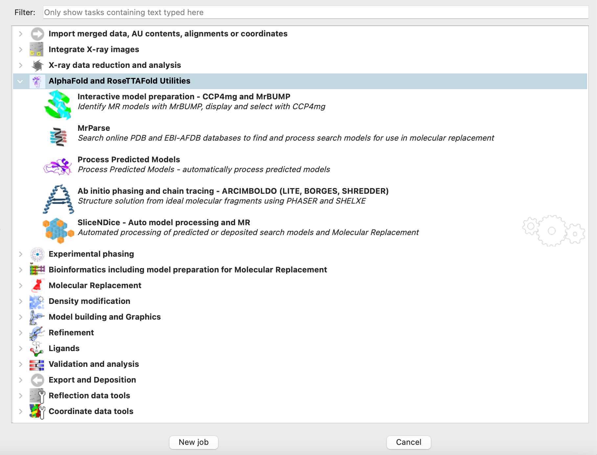

Dealing with AlphaFold and RoseTTAFold models in CCP4i2¶
AlphaFold2 and RoseTTAFold predicted models are widely acknowledged as good structure templates for Molecular Replacement (MR). This article describes AlphaFold and RoseTTAFold implementation and the use of predicted models in CCP4i2.
Using structure predictions from external sources¶
Predicted models can be used in i2 in exactly the same way as models derived from experimentally determined structures (taken from PDB or elsewhere). The only difference between them is that structure prediction software puts pLLDT scores (AlphaFold) or rmsd estimates (RoseTTAFold) in place of B-factors. This misguides MR programs regarding the regions with low or high reliability, and, therefore, the scores must be recalculated as B-factors.
After models were imported in i2 please, please, use Process Predicted Models task to create estimated B-values for the models. The task also allows performing some model processing like removing low confidence regions and/or splitting the model into compact regions. As a result, the predicted model can be further used in molecular replacement programs (Phaser and Molrep) or directly in Slice-n-Dice, without a preliminary model preparation step. Slice-n-Dice task is useful in case when noticeable conformations in MR models are expected (for example, predicted models cannot provide an exact hinge state or a twist between domains). Slice-n-Dice attempt to split the given model into a predefined number of conservative domains, and, in addition, Slice-n-Dice attempts to molecular replace them separately with Phaser.
Note
Arcimboldo Shredder provides functionality similar to Slice-n-Dice. It can use models directly and split models into domains which will be used for further MR.
Just like PDB models, predicted models are automatically scanned, acquired and analysed in automatic pipelines MrBUMP, MrParse , Interactive selection of MR model components CCP4mg and MrBUMP and Lorestr directly from the AlphaFold Database (AFDB) at the EBI.
After MR with predicted models¶
Post-phasing steps in structure solution are not different for MR with predicted or from-the-PDB models.
Predicted models usually have a very high sequence similarity with the target structure: 100% if a structure was generated from the given sequence, and very close to 100% if the structure was obtained from AFDB. Nevertheless, structure rebuilding with Modelcraft, Buccaneer or Arp/wArp is usually required after phasing because parts of the model are often removed at model preparation stage due to the low confidence score (equivalent to high B-factors). Even if the structure was phased using Slice-n-Dice without the model preparation step, not all domains may get fitted.
Building a structure includes cycles of manual corrections in Coot followed by refinement with Refmac. In low resolutions, the process is stabilised by using external restraints generated by Prosmart (part of Refmac task) from homologous structures. This is conveniently automated by Lorestr, which can automatically acquire suitable structure homologs from both PDB and AFDB.
CCP4i2 AlphaFold Utilities¶
Please note, that AlphaFold and RoseTTAFold utilities can be found in corresponding section in the CCP4i2 task list menu
{kind=link}
Tutorials¶
Creating Molecular Replacement Search Ensembles with CCP4MG/MrBUMP tutorial can be nice practice on how to create the ensembles for Molecular Replacement with CCP4mg molecular viewer.
ACKNOWLEDGEMENTS
This article uses materials kindly provided by Dr. Ronan Keegan, whose help is greatly appreciated.